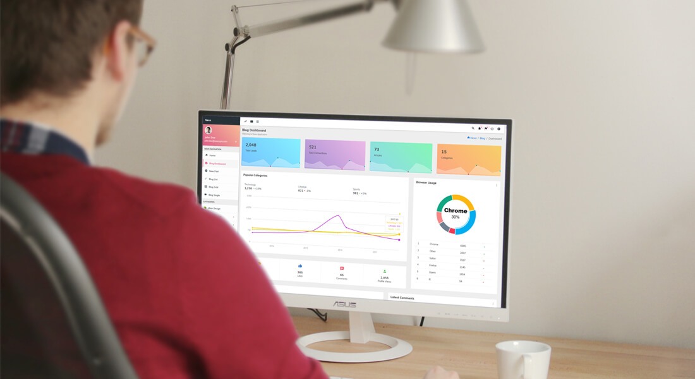

Courses info Welcome to kcw

Bsc(Computer Applications)
| Duration | 3Years |
| Fees | 18,000 |
| Eligibilty | 10+2 pass |
| Students | 400 |
Course Details
Course Description
B.Sc Computer Applications is a three-year full-time undergraduate program that deals with studying various aspects of computer science. The course gives students an in-depth understanding of Computer Applications. There are many job opportunities available for students after graduation. This course is best suited for students who desire to pursue their career in computer functioning, programming languages, operating system, web designing, or any other computer-related field. In addition, this course offers ample job opportunities in the IT industry.